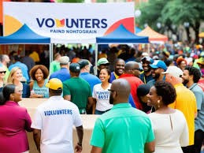
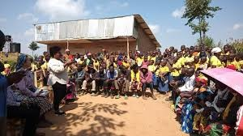

Bienvenidos a nuestra ONG
Juntos podemos construir un futuro más brillante para todos.
Noticias y Eventos Recientes
Evento de Recaudación de Fondos
Únete a nosotros el 15 de noviembre para nuestro evento anual de recaudación de fondos.
Nuevo Proyecto de Agua Potable
Estamos emocionados de anunciar el lanzamiento de nuestro nuevo proyecto de agua potable en comunidades rurales.